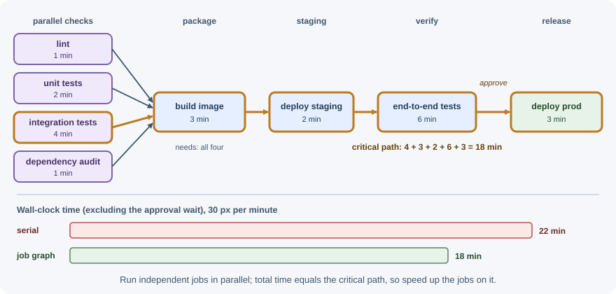
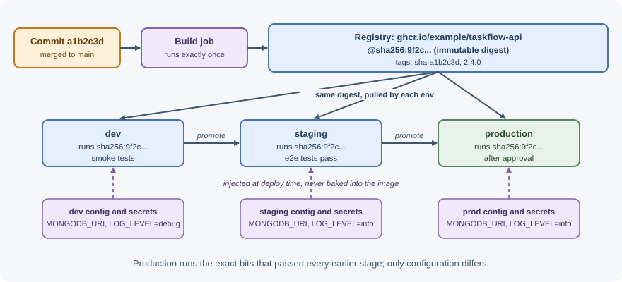

Pipeline Design¶
A CI/CD pipeline is a program that turns a commit into a tested, deployable artifact and moves it through environments. Like any program, it can be well or badly designed: the same checks can take 8 minutes or 45, cost a little or a lot, and produce trustworthy or misleading results depending on how jobs are arranged, cached, and connected.
This lesson covers stages and job graphs, fail-fast ordering, parallelism and matrix builds, lockfile-keyed dependency caching, passing artifacts between jobs, building once and deploying many times, deterministic builds, path filters for monorepos, pipeline speed budgets, and idempotent deploy steps.
Why it matters¶
Pipeline speed and reliability directly shape how a team works. A slow pipeline makes developers batch changes and context-switch; a flaky one teaches them to ignore red; a pipeline that rebuilds per environment ships bits that were never tested; and a deploy step that is not idempotent turns every retry into a gamble. Because the pipeline runs for every push of every developer, small design choices multiply: shaving 3 minutes off a pipeline that runs 200 times a day saves 10 hours of waiting daily.
Real-world usage¶
- Twelve-Factor apps. The Build, release, run factor requires strictly separating the build stage (turning code into an executable bundle) from the release stage (combining that build with an environment's config), with every release getting a unique ID and never being changed. That is "build once, deploy many" stated as a principle.
- Google. The CI chapter of Software Engineering at Google explains how Google's continuous build uses the dependency graph to run only the tests downstream of a change, batches changes when there are too many to test individually, and splits fast presubmit checks from slower post-submit ones.
- GitHub Actions caching. GitHub's
dependency caching reference
documents lockfile-hash keys with
hashFiles, prefix-matchingrestore-keys, branch scoping, immutable cache entries, a default 10 GB per-repository limit, and eviction of caches unused for 7 days. - Reproducible builds. The Reproducible Builds project defines a build as reproducible when identical source, environment, and instructions produce bit-for-bit identical artifacts, which lets anyone verify that a binary came from the claimed source.
Popular tools and providers: GitHub Actions, GitLab CI/CD (stages and
needs), CircleCI workflows, Buildkite pipelines, Jenkins pipelines, and
build systems with remote caching such as Bazel, Nx, and Turborepo.
How it works¶
Stages and job graphs¶
Older pipelines run in stages: every job in stage 1, then every job in
stage 2, and so on. Modern systems describe a directed acyclic graph
(DAG) of jobs: each job declares the jobs it needs (needs: in GitHub
Actions and GitLab), and anything without a dependency starts
immediately. Jobs on separate runners run in parallel.

The pipeline's wall-clock time is the length of its critical path, the longest chain of dependent jobs. In the example, making lint faster saves nothing; making integration or end-to-end tests faster saves time directly. Every job also has fixed overhead (runner start, checkout, dependency install, typically 20-60 seconds), so splitting work into too many tiny jobs can make a pipeline slower.
Fail-fast ordering¶
Run the cheapest checks that catch the most common failures first, and stop spending compute once a run is doomed:
| Order | Check | Why here |
|---|---|---|
| 1 | Formatting, lint, type check | Seconds; catch the most frequent mistakes |
| 2 | Unit tests | Fast and deterministic |
| 3 | Integration tests with service containers | Slower; need a database |
| 4 | Build and package | Only worth it if the code is correct |
| 5 | Deploy to staging, end-to-end tests | Slowest and most expensive |
| 6 | Production deploy | Only for verified artifacts |
Fail-fast has two layers. Ordering decides what runs first; parallel
jobs that are independent can still run side by side. In a matrix,
strategy.fail-fast: true (the default in GitHub Actions) cancels the
other matrix jobs when one fails, which saves compute but hides whether
other combinations would also have failed; set it to false when you
need the full picture.
Parallelism and matrix builds¶
A matrix runs the same job over combinations of variables:
strategy:
matrix:
node: [22, 24, 26]
os: [ubuntu-latest, windows-latest]
This creates 6 jobs. Use matrices where the variation is real: a library that supports several Node.js versions and operating systems. For an application deployed on one runtime (TaskFlow API runs Node.js 24 in a Linux container), test that one combination; a matrix adds cost without adding confidence. The other common use is test sharding: splitting one slow suite across N parallel jobs (see testing and quality gates).
Dependency caching¶
Installing dependencies from the network is often the slowest part of a short job. A cache stores files between runs under a key; the right key changes exactly when the cached content should change. For npm that is the lockfile:
key: Linux-npm-<sha256 of package-lock.json>
restore-keys: Linux-npm-
![Diagram: the job computes the key from the runner OS and the hash of package-lock.json; if the exact key exists the npm cache is restored, npm ci needs no downloads (about 10 seconds in this example), and saving is skipped; if the lockfile changed, the restore-keys prefix restores the newest older cache, npm ci downloads only changed packages (about 25 seconds) and a new cache is saved under the new key; if nothing matches the job runs cold, downloading everything (about 60 seconds), then saves the cache.](../lockfile-cache-hit-miss.svg)
Rules that keep caching correct:
- Cache the package manager's download cache (
~/.npm), notnode_modules.npm cideletesnode_modulesanyway, and caching it across Node.js versions or operating systems causes subtle breakage.actions/setup-nodewithcache: npmdoes this for you. - Key on everything that changes the content: OS, runtime version if native modules are built, and the lockfile hash.
- Caches are immutable: an existing key is never overwritten, which is why the key must change with the content.
- Caches are a speed-up, never a correctness requirement. A cold run must produce the same result.
- Scope matters. Branch runs can read caches from their own branch and the default branch; pull requests can also read their base branch's. Untrusted workflows writing caches that privileged workflows later read is a known poisoning risk (see pipeline and supply chain security).
Container builds cache layers instead. With Docker Buildx in GitHub
Actions, cache-from: type=gha and cache-to: type=gha,mode=max store
layers in the Actions cache, so an unchanged npm ci layer is reused
(see writing production Dockerfiles).
Artifacts between jobs¶
Jobs run on fresh machines and share nothing by default. Two mechanisms move files between them, and they are often confused:
| Cache | Artifact | |
|---|---|---|
| Purpose | Speed up repeated work (dependencies) | Pass outputs of this run to later jobs, or keep them for people |
| Lifetime | Until evicted (unused 7 days, size limit) | Retention period (90 days by default, configurable) |
| Guaranteed present | No | Yes, within the run |
| Typical contents | ~/.npm, build tool caches |
Built bundles, test reports, coverage, SBOMs |
| Actions | actions/cache, setup-* caching |
actions/upload-artifact, actions/download-artifact |
Container images are not passed as workflow artifacts; the build job pushes them to a registry and passes the digest to later jobs as a job output (shown below).
Build once, deploy many¶
Build the deployable artifact exactly once, from one commit, and deploy that same artifact to every environment. Environment differences belong in configuration injected at deploy time, never in separate builds.

Rebuilding for each environment means the production artifact was never tested: a dependency release between builds, a different base image, or a build flag can change it. Promotion by digest, approvals, and deployment records are covered in artifacts and environment promotion.
Deterministic builds¶
A build is deterministic when the same inputs always produce the same output. Sources of nondeterminism and their fixes:
| Source | Fix |
|---|---|
| Floating dependency versions | Commit the lockfile; install with npm ci |
Floating base images (node:24) |
Pin by digest (node:24-slim@sha256:...), updated by Dependabot |
| Floating tool versions (runner images, CLIs) | Pin action versions and tool versions explicitly |
| Network fetches during the build | Fetch everything in an install step; fail if the network is needed later |
| Timestamps and build paths embedded in output | Use SOURCE_DATE_EPOCH, avoid embedding absolute paths |
| Tests depending on time, randomness, or order | Fixed seeds, fake clocks, isolated test data |
Full bit-for-bit reproducibility is hard; the practical goal is that rebuilding the same commit gives functionally identical artifacts, and that you never need to, because you keep the original.
Monorepo path filters¶
In a monorepo, running every pipeline on every change wastes time. Workflows can trigger only when relevant paths change:
on:
pull_request:
paths:
- "apps/api/**"
- "packages/shared/**"
- ".github/workflows/api.yml"
The catch: a workflow skipped by a path filter never reports its checks,
so a required check stays pending and blocks the PR. Two common
solutions are to keep workflow-level filters only on non-required
workflows, or to run the workflow always and decide inside it, with a
small job that computes what changed and conditional jobs (a job skipped
by if: reports success). Build tools such as Nx and Turborepo can also
compute "affected" projects from the dependency graph.
Pipeline speed budgets¶
Treat pipeline time as a budget with an owner, like page-load time:
| Segment | Budget (typical target) |
|---|---|
| Pull request checks | 10 minutes or less |
| Merge to deployed in staging | 20 minutes or less |
| Staging to production (excluding approval wait) | 15 minutes or less |
| Checkout and dependency install per job | Under 1 minute with caching |
| Flaky failure rate | Well under 1% of runs |
Measure the critical path and its trend (gh run view <id> --json jobs
gives each job's start and end time), alert on regressions, and spend
effort on the jobs that sit on the critical path.
Idempotent deploy steps¶
An idempotent step produces the same end state no matter how many times it runs. Deploy steps must be idempotent because pipelines retry: a runner dies, a network call times out, someone clicks "re-run".
- Declare desired state instead of issuing changes:
kubectl apply,terraform apply, or "set the image to this digest" are safe to repeat; "add one replica" or "append this line" are not. - Use immutable inputs: deploy a digest, not
latest. - Make migrations tracked: migration tools record applied migrations, so re-running applies nothing new.
- Serialize deploys per environment with a concurrency group, so two runs never deploy to the same environment at once.
- Verify after acting: wait for the rollout to become healthy, and fail the step if it does not.
When to use and when not to use¶
| Technique | Use when | Avoid or adapt when |
|---|---|---|
| Job DAG with parallel jobs | Independent checks that each take more than a minute | Tiny checks where per-job overhead dominates; group them in one job |
| Matrix builds | Libraries and tools supporting several runtimes or platforms | Applications deployed on one runtime |
| Test sharding | A single suite longer than a few minutes | Suites with heavy shared setup per shard |
| Dependency cache | Almost always | Workflows with elevated privileges where cache poisoning is a concern; disable or isolate |
| Workflow artifacts | Passing files between jobs, keeping reports | Container images (use a registry) |
| Path filters | Monorepos with independent projects | Required checks (use in-workflow change detection instead) |
| Post-merge-only suites | Slow, less reliable suites | Checks that must block merging (security, unit tests) |
Practical examples¶
A pipeline skeleton as a job graph¶
# .github/workflows/pipeline.yml (structure; full steps on the next pages)
name: pipeline
on:
pull_request:
push:
branches: [main]
permissions:
contents: read
jobs:
lint: { runs-on: ubuntu-latest, steps: [ ... ] }
unit: { runs-on: ubuntu-latest, steps: [ ... ] }
integration: { runs-on: ubuntu-latest, services: { ... }, steps: [ ... ] }
audit: { runs-on: ubuntu-latest, steps: [ ... ] }
ci-ok: # the single required check
if: always()
needs: [lint, unit, integration, audit]
runs-on: ubuntu-latest
steps:
- name: Fail if any needed job failed or was cancelled
if: contains(needs.*.result, 'failure') || contains(needs.*.result, 'cancelled')
run: exit 1
build:
needs: ci-ok
if: github.event_name == 'push' # only main builds a deployable image
runs-on: ubuntu-latest
permissions: { contents: read, packages: write }
outputs:
digest: ${{ steps.push.outputs.digest }}
steps: [ ... ] # step id "push" builds and pushes the image
deploy-staging:
needs: build
environment: staging
concurrency: { group: deploy-staging, cancel-in-progress: false }
runs-on: ubuntu-latest
steps: [ ... ] # deploys needs.build.outputs.digest
e2e:
needs: deploy-staging
runs-on: ubuntu-latest
steps: [ ... ]
deploy-production:
needs: [build, e2e]
environment: production # required reviewers approve here
concurrency: { group: deploy-production, cancel-in-progress: false }
runs-on: ubuntu-latest
steps: [ ... ] # deploys the same digest
The ci-ok job exists because of a subtle rule: if a job fails, the jobs
that need it are skipped, and a skipped job counts as passing for
required checks. Requiring only build would therefore let a PR with
failing tests merge. An aggregator job with if: always() that fails
when any dependency failed gives branch protection one reliable check to
require. Complete versions of these jobs are in
GitHub Actions in depth and
artifacts and environment promotion.
A matrix for a shared npm package¶
# .github/workflows/sdk.yml (taskflow-sdk supports several Node.js versions)
jobs:
test:
runs-on: ${{ matrix.os }}
strategy:
fail-fast: false # show every failing combination
max-parallel: 4
matrix:
node: [22, 24, 26]
os: [ubuntu-latest, windows-latest]
exclude:
- node: 22
os: windows-latest
include:
- node: 24
os: macos-latest
steps:
- uses: actions/checkout@v7
- uses: actions/setup-node@v7
with:
node-version: ${{ matrix.node }}
cache: npm
- run: npm ci
- run: npm test
Three Node.js versions times two operating systems is 6 combinations;
the exclude removes one and the include adds a macOS job, so 6 jobs
run, at most 4 at a time.
Explicit lockfile-keyed caching and Docker layer caching¶
# .github/workflows/build.yml (excerpt)
steps:
- uses: actions/checkout@v7
- uses: actions/setup-node@v7
with:
node-version-file: .nvmrc
- uses: actions/cache@v6
with:
path: ~/.npm
key: ${{ runner.os }}-npm-${{ hashFiles('**/package-lock.json') }}
restore-keys: |
${{ runner.os }}-npm-
- run: npm ci
- uses: docker/setup-buildx-action@v4
- uses: docker/build-push-action@v7
with:
context: .
push: false
tags: taskflow-api:ci
cache-from: type=gha
cache-to: type=gha,mode=max
setup-node's cache: npm input does the same as the explicit
actions/cache step; the explicit form shows how keys work and lets you
cache other tools. mode=max also caches intermediate layers of
multi-stage builds.
Change detection that works with required checks¶
# .github/workflows/monorepo-ci.yml (excerpt)
on:
pull_request:
jobs:
changes:
runs-on: ubuntu-latest
outputs:
api: ${{ steps.diff.outputs.api }}
web: ${{ steps.diff.outputs.web }}
steps:
- uses: actions/checkout@v7
with:
fetch-depth: 0
- id: diff
env:
BASE_SHA: ${{ github.event.pull_request.base.sha }}
run: |
changed=$(git diff --name-only "$BASE_SHA" HEAD)
echo "api=$(grep -qE '^(apps/api/|packages/shared/)' <<<"$changed" && echo true || echo false)" >> "$GITHUB_OUTPUT"
echo "web=$(grep -qE '^(apps/web/|packages/shared/)' <<<"$changed" && echo true || echo false)" >> "$GITHUB_OUTPUT"
api-test:
needs: changes
if: needs.changes.outputs.api == 'true' # skipped job reports success
runs-on: ubuntu-latest
steps:
- uses: actions/checkout@v7
- run: npm ci && npm test --workspace apps/api
The workflow always runs, so its checks always report. When the API did
not change, api-test is skipped and counts as passing; when it did, the
tests must pass.
An idempotent deploy step¶
#!/usr/bin/env bash
# scripts/deploy.sh: deploy one image digest to one environment; safe to re-run
set -euo pipefail
ENVIRONMENT="$1" # staging | production
IMAGE="$2" # ghcr.io/example/taskflow-api@sha256:...
# Desired state: the Deployment runs exactly this image. Re-running is a no-op.
kubectl --context "$ENVIRONMENT" -n taskflow \
set image deployment/taskflow-api api="$IMAGE"
# Verify: wait for the rollout to finish, fail the job if it does not.
kubectl --context "$ENVIRONMENT" -n taskflow \
rollout status deployment/taskflow-api --timeout=5m
Setting the image to the digest it already runs changes nothing, so a
retried job is harmless, and rollout status makes the step fail when
the new version never becomes healthy. Kubernetes rollouts are covered in
health probes and rolling updates.
Finding the critical path of a slow run¶
gh run list --workflow pipeline.yml --branch main --limit 1 --json databaseId --jq '.[0].databaseId'
# 13579
gh run view 13579 --json jobs \
--jq '.jobs[] | [.name, .startedAt, .completedAt, .conclusion] | @tsv'
Sort the jobs by start time and follow the needs chain with the latest
finishing times; that chain is where optimization pays.
Best practices¶
- Model the pipeline as a job graph; parallelize independent checks and keep the critical path short.
- Order checks cheapest-first and fail fast, but keep per-job overhead in mind.
- Use matrices only where the variation is real, and sharding for long suites.
- Key caches on the lockfile hash (plus OS and runtime), cache download
directories rather than
node_modules, and make cold runs correct. - Pass files with artifacts and images with registry digests, not caches.
- Build once per commit and promote the same artifact; inject configuration at deploy time.
- Pin dependencies, base images, and actions so builds are deterministic.
- Give branch protection one aggregate required check that cannot be skipped into a pass.
- Write deploy steps as idempotent desired-state operations, serialized per environment.
- Set and track pipeline speed budgets.
In production¶
- A PR with failing tests was merged.
Detect:
mainfails right after the merge; the PR's required check shows "skipped" or "success" while tests failed. Cause: the required check was a job thatneedsthe test job, so it was skipped when tests failed, and skipped counts as success. Fix: require an aggregator job withif: always()that fails on any failed or cancelled dependency, or require the test jobs themselves. - Builds fail at random after a dependency cache was introduced.
Detect: failures disappear when the cache is deleted (Actions caches
page or
gh cache delete --all). Cause: cachingnode_modulesacross Node.js versions or OSes, or a key that does not include the lockfile hash. Fix: cache~/.npmkeyed on OS and lockfile hash, and always runnpm ci. - Production runs code that differs from what staging tested. Detect: the image digest in production differs from staging's for the same version. Cause: each environment's job rebuilt the image. Fix: build once, pass the digest as a job output, and deploy by digest everywhere.
- A monorepo PR is blocked forever on a pending check.
Detect: the check shows "Expected: waiting for status"; the workflow
has a
pathsfilter. Cause: the workflow was skipped, so its required check never reported. Fix: run the workflow always and use in-job change detection with conditional jobs. - A re-run deploy left two versions half-rolled-out.
Detect: overlapping deploy runs in the Actions history; mixed pod
versions. Cause: non-idempotent steps and no concurrency control.
Fix: desired-state deploys by digest, a concurrency group per
environment with
cancel-in-progress: false, and rollout verification. - The pipeline crept from 9 to 26 minutes over six months. Detect: trend of run duration per workflow. Cause: new jobs added to the critical path, a slow integration suite, lost caching. Fix: set a budget with an owner, parallelize or shard the critical path, and restore caching.
Important terminology¶
- Stage: A group of jobs that runs before the next group starts.
- Job DAG: Jobs connected by declared dependencies (
needs). - Critical path: The longest chain of dependent jobs; it sets the pipeline's duration.
- Fail fast: Running cheap, likely-to-fail checks first and stopping early.
- Matrix build: One job definition run over combinations of variables.
- Sharding: Splitting one test suite across parallel jobs.
- Cache key: The identifier deciding which cached files to restore.
- Restore keys: Fallback key prefixes used when no exact match exists.
- Artifact (workflow): Files uploaded by a job for later jobs or people.
- Build once, deploy many: Promoting one built artifact through all environments.
- Deterministic build: Same inputs, same outputs.
- Path filter: A trigger condition based on changed file paths.
- Idempotent step: A step whose repeated execution yields the same end state.
Common mistakes and misconceptions¶
- Splitting every check into its own job, so runner overhead dominates.
- Using a matrix for an application that runs on one runtime.
- Caching
node_modulesor using a cache key without the lockfile hash. - Treating caches as artifacts, or depending on a cache being present.
- Rebuilding the image for staging and production.
- Requiring a check that can be skipped into a pass.
- Path filters on workflows that provide required checks.
- Deploy scripts that "add" or "increment" instead of declaring state.
- Optimizing jobs that are not on the critical path.
Revision questions¶
- What is a pipeline's critical path, and why does speeding up a job off it not help?
- Order these checks for fail-fast: end-to-end tests, lint, build image, unit tests, integration tests. Justify the order.
- A matrix has
node: [22, 24, 26],os: [ubuntu-latest, windows-latest, macos-latest], oneexcludeentry, and twoincludeentries that add new combinations. How many jobs run? (3 x 3 - 1 + 2 = 10.) - Why is the lockfile hash the right cache key for npm, and why cache
~/.npmrather thannode_modules? - Explain the difference between a cache and an artifact, with one example of each.
- Why must a pipeline build once and deploy many, and where do environment differences go?
- Why can a required check that
needsthe test job let a failing PR merge, and how do you fix it? - What makes a deploy step idempotent? Rewrite "scale up by one replica" as an idempotent operation.
Further learning¶
- Twelve-Factor App: Build, release, run
- GitHub Docs: Dependency caching reference
- GitHub Docs: Running variations of jobs (matrix)
- GitHub Docs: Workflow artifacts
- GitHub Docs: Troubleshooting required status checks
- Docker Docs: Cache management with GitHub Actions
- Reproducible Builds: definition
- Next: GitHub Actions in depth. Back to the CI/CD overview.